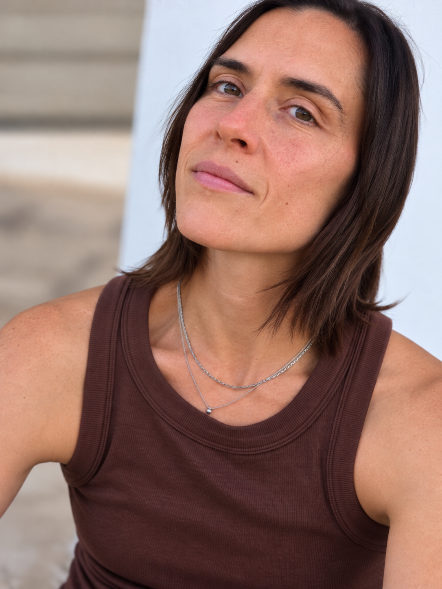
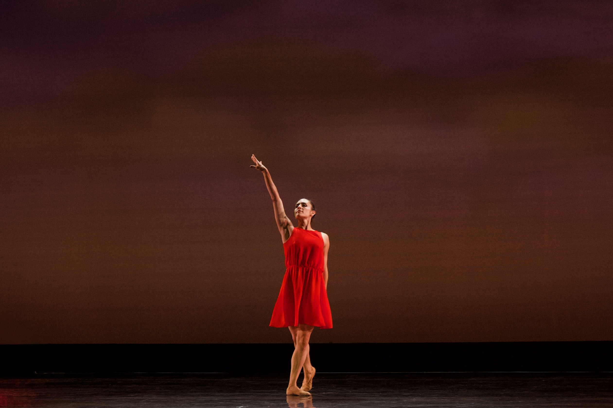
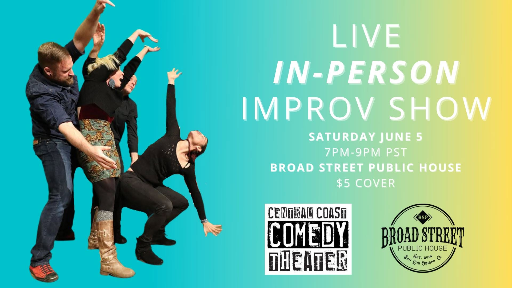

Finding the funny in being human.
I'm Katya, an improviser and former professional dancer. I love physical comedy, creating characters, and finding the humor in everyday life — especially the things that connect us across cultures.

From dance to improv
I was a professional dancer with the San Francisco Ballet, trained at the School of American Ballet, and worked with choreographers including Mark Morris, Helgi Tomasson, and Irina Jacobson, among others. Dance was a big part of my life many years ago, and it still shapes how I improvise.
I've been doing improv for over 14 years. I went through the advanced program at Upright Citizens Brigade (UCB), studied with Will Hines at World's Greatest Improv, and have spent much of the past year studying with Billy Merritt.
For many years, I performed with Central Coast Comedy Theater. I'm also part of the Bit Comedy Network, a podcast community of improvisers from different places and walks of life.

On stage — movement has always been part of how I tell stories.
Movement, character & curiosity
I'm a very physical improviser. I love creating characters through movement, posture, and voice. Even when I'm improvising only with audio, I find myself embodying the characters and changing my voice to discover who they are.
My bicultural upbringing, trilingual family, and experiences across cultures have also shaped the way I see comedy. I love improvising with people from around the world and finding the humor that travels across languages and backgrounds. To me, laughter is one of the things that brings us together.
Dance taught me that learning the rules — and practicing them until they're second nature — gives you the freedom to depart from them. It's taken me years to feel comfortable with improv, though never completely comfortable. That's part of what keeps it exciting.
Practice, discover, repeat
I've taught physical improvisation, dance, and modern dance at studios and arts organizations, including in Washington, D.C., and San Luis Obispo, California.
I love group work: taking an improv principle or technique, practicing it together, and then sharing what we discovered. I also believe in repetition. That's how we develop the muscle memory that helps us respond more freely in the moment.
I'm a big note-taker, always observing what happens around me and what makes people laugh. Most of all, I want the room to feel curious, playful, and open to discovery.
Listen & watch

From a live Central Coast Comedy Theater improv show.
I love both live, in-person improv and the challenge of creating characters and scenes through sound alone. Here are some places you can hear me and the groups I've worked with.